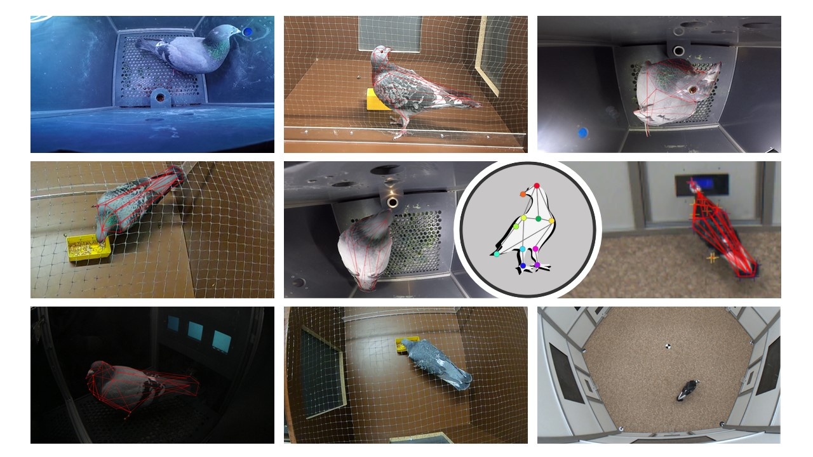

Welcome
Contents
Welcome¶

The PigeonSuperModel is an open source implementation of multiple pre-trained deep-learning models for markerless pose tracking in pigeons. We provide pre-trained weights for different ResNet and UNet models to be used in DeepLabCut and SLEAP, as well as a manually labeled dataset with 1151 frames to train and evaluate further models.
Why a PigeonSuperModel?¶
Advances in computational neuroethology and markerless pose tracking are making it ever easier for researchers to quantify animal behavior from non-invasive video recordings. Yet, these models still rely on specialized hardware (particularly GPUs) for heavier computations, and model training can take up to several days (which makes cloud solutions such as colab impractical). A further downside is the (yet) missing standards for video recording and analysis, which makes reproducibility across labs somewhat tricky.
With this PigeonSuperModel we provide multiple pre-trained neural networks for out-of-the-box video analysis of pigeon behavior. Using a shared PigeonSuperModel across labs, we advocate for a standardized set of markers for pigeon tracking and generalizable models across experiments, animals, and camera setups.
We make our dataset openly available with 1151 manually labeled video frames of different pigeons in different settings, recorded from different camera views. We also provide multiple pre-trained models for popular markerless tracking software (i.e., DeepLabCut and SLEAP) to be used out-of-the-box on your own data without additional configurations. We originally trained these models to generalize well across different experimental setups, using different cameras and different animals, and we found that pre-trained models can be easily re-trained on outlier frames to specialize on any particular data set using pigeons as a model organism.
Dataset¶
The dataset we provide, consists of 1151 manually labeled frames from 4 different experiments and depicting single animals in various poses and behaviors captured in different experimental setups. It is therefore especially well balanced to generalize to new videos. We originally designed it to train neural networks (e.g. using DeepLabCut or SLEAP) for video analysis via markerless pose tracking in pigeons. It can also be used for 3D reconstruction multi-views setups (e.g. using Anipose). Read more.
Models¶
Using this dataset, we trained multiple DeepLabCut models based on different architectures (resnet-50, resnet-101, resnet-152) and compared tracking performance across different training stages. We make the final, pre-trained models available for out-of-the-box analysis of new videos. Moreover, we used the same dataset to train UNet models in SLEAP and benchmark performance differences, training and inference rates. Read more.
Tutorial¶
To wrap it all up, we provide some further instructions on how to make use of our pre-trained models in either DeepLabCut or SLEAP, including a section on how to re-train these models to your specific experimental setup. We also guide you through the entire process in DeepLabCut and SLEAP with beginner friendly jupyter notebooks. Read more.
Content¶
References¶
If you find either the dataset or the pre-trained models provided in the PigeonSuperModel to be useful for your research, please cite:
Hidalgo-Gadea, G., Möser, S.C., … & Güntürkün, O. (2022). In preparation
Contributors¶
The PigeonSuperModel is a group effort by the entire Biopsychology Team with the Institute of Cognitive Neuroscience (IKN) at the Ruhr-University Bochum. The project originated from common interest in using machine learning for animal tracking, which led us to create a common video dataset from multiple experiments. Guillermo Hidalgo Gadea and Sarah Möser managed the project and trained the PigeonSuperModel. Read more.
This work was carried out at the Institute of Cognitive Neuroscience (IKN), Department of Biopsychology at the Ruhr-University Bochum and supported by the German Research Foundation DFG in the context of funding the Research Training Group “Situated Cognition” (GRK 2185/1). Original: Gefördert durch die Deutsche Forschungsgemeinschaft (DFG) - Projektnummer GRK 2185/1.